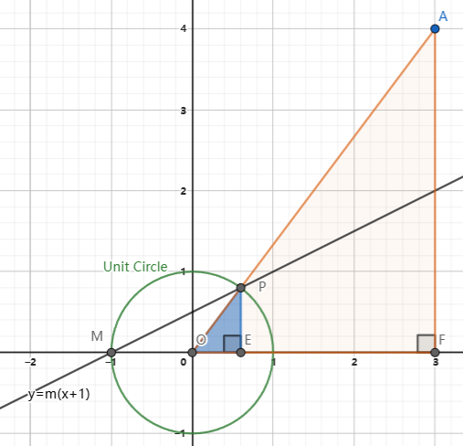

可视化微分几何和形式
第一幕习题
序幕：牛顿的最终相等（$\asymp$）
1.（这是一个展示如何从序幕里定义的“最终相等”变为相等的模型.）画一个边长为 $x$ 的立方体，其体积为 $V=x^3$。然后，保持这个立方体的一个顶点不变，将立方体画得稍大一些，使得边长为 $x+\delta x$。记这样引起的体积增量为 $\delta V$，用这个图推导：当 $\delta x$ 趋于 0 时，
$$ \delta V \asymp 3x^2 \delta x \Longrightarrow \frac{\mathrm{d}V}{\mathrm{d}x} \asymp \frac{\delta V}{\delta x} \asymp 3x^2 \Longrightarrow \frac{\mathrm{d}V}{\mathrm{d}x} \asymp 3x^2。$$
因为最后一个最终相等的式子两边的量都与 $\delta x$ 无关，所以它们相等：
$$ (x^3)’ = \frac{\mathrm{d}V}{\mathrm{d}x} = 3x^2。$$
证明：参考序幕中的描述，考虑完全立方和公式：

则有
$$
V + \delta V = (x + \delta x)^3 = x^3 + 3x^2 (\delta x) + 3x (\delta x)^2 + (\delta x)^3,
$$
上式右侧的第一、二、三、四项分别对对应图中的青色、绿色、紫色和黄色体积。可见 $\delta V$ 来自于绿色、紫色和黄色体积。当 $\delta x$ 足够小时，对 $V$ 的贡献从大到小依次是绿色 $>$ 紫色 $>$ 黄色，所以有 $\delta V \asymp 3x^2 \delta x$ 成立。于是有：
$$
\frac{\mathrm{d}V}{\mathrm{d}x} \asymp \frac{\delta V}{\delta x} \asymp \frac{3x^2\delta x}{\delta x} = 3x^2.
$$
由于等式两边都与 $\delta x$ 无关，所以可得：
$$
\frac{\mathrm{d}V}{\mathrm{d}x} \asymp 3x^2.
$$
2。此题来自 Needham（1993）。令 $c = \cos\theta$，$s = \sin \theta$.在 $\mathbb{R}^2$ 上画一个单位圆，在第一象限的单位圆周上画出点 $p = (c, s)$。让 $p$ 点绕原点旋转一个（最终为 $\theta$ 的）小角度 $\delta \theta$。以 $p$ 点为顶点，以 $\delta c$ 和 $\delta s$ 为边，画一个小三角形利用在序幕里介绍的牛顿的几何论证，立即可以同时推导出
$$ \frac{\mathrm{d}s}{\mathrm{d}\theta} = c \quad \text{且} \quad \frac{\mathrm{d}c}{\mathrm{d}\theta} = -s。$$
如图所示：
当 $\theta$ 增加了小量 $\delta \theta$ 后，垂直和水平方向的长度增量分别为 $\delta c$ 和 $\delta s$。当 $\delta \theta$ 趋向于 0 时，$\theta$ 临边趋近于 $\delta \theta$ 的弧长，即 $\delta l \asymp \delta \theta$（单位圆半径为 1）。
由于 $\psi \asymp \pi / 2$，小三角形与大三角形相似。有
$$
\frac{\mathrm{d}c}{\mathrm{d}\theta} \asymp \frac{-\delta c}{\delta \theta} \asymp \frac{-\delta c}{\delta l} \asymp \frac{-s}{1} \Longrightarrow \frac{\mathrm{d}c}{\mathrm{d}\theta} = -s
$$
以及
$$
\frac{\mathrm{d}s}{\mathrm{d}\theta} \asymp \frac{\delta s}{\delta \theta} \asymp \frac{\delta s}{\delta l} \asymp \frac{c}{1} \Longrightarrow \frac{\mathrm{d}s}{\mathrm{d}\theta} = c.
$$
3。此题来自 Needham（1993）。在 $\mathbb{R}^2$ 的第一象限上任取一点 $(a,b)$，令 $L$ 是经过点 $(a, b)$ 的直线，$A$ 是 $x$ 轴、$y$ 轴和 $L$ 围成的三角形的面积
- 利用通常的微积分方法求出使得 $A$ 最小的 $L$ 的位置，并证明 $A_{\min}=2ab$.
- 利用牛顿的推理，在不计算的情况下，立即求出其解.[提示：让 $L$ 旋转一个（最终为0的）小角度 $\delta \theta$，记旋转后改变的面积为 $\delta A$。将 $\delta A$ 画成两个小三角形，可以看到这两个小三角形分别最终等于两个小扇形，用 $\delta \theta$ 写出 $\delta A$ 最终相等的表达式.再令 $\delta A = 0$.]
解：
1。第一问基于拉格朗日乘子法计算最小面积。
首先，我们知道二位平面直角坐标系下的直线方程为
$$
Ax + By + C = 0, \tag{3-1}
$$
直线 $L$ 经过点 $(a, b)$，所以有
$$
Aa + Bb + C = 0 \tag{3-2}
$$
成立。此直线与 $x$ 轴和 $y$ 轴的交点分别为
$$
X_0 = \left(-\frac{C}{A}, 0\right) \quad \text{和} \quad Y_0 = \left(0, -\frac{C}{B}\right),
$$
于是 $x$ 轴、$y$ 轴和 $L$ 围成的三角形面积为
$$
S_{\triangle OX_0Y_0}(A, B, C) = \frac{C^2}{2\vert A B \vert}。\tag{3-3}
$$
将 (3-2) 看作约束，(3-3) 看作最小化的目标函数，则可以定义拉格朗日函数
$$
\mathcal{L}(A, B, C, \lambda) = \frac{C^2}{2\vert A B \vert} + \lambda(Aa + Bb + C), \tag{3-4}
$$
求 $\min S_{\triangle OX_0Y_0}$ 的问题可转化为
$$
\min S_{\triangle OX_0Y_0} \Longrightarrow \frac{\partial \mathcal{L}}{x_i} = 0, x_i = A, B, C, \lambda.
$$
于是
$$
\tag{3-5}
\begin{cases}
\displaystyle (\clubsuit) \quad \frac{\partial \mathcal{L}}{\partial A} = -\frac{C^2}{2A^2 \vert B \vert} + \lambda a = 0, \\[1em]
\displaystyle (\diamondsuit) \quad \frac{\partial \mathcal{L}}{\partial B} = -\frac{C^2}{2\vert A \vert B^2} + \lambda b = 0, \\[1em]
\displaystyle (\heartsuit) \quad \frac{\partial \mathcal{L}}{\partial C} = \frac{C}{2\vert AB \vert} + \lambda = 0, \\[1em]
\displaystyle (\spadesuit) \quad \frac{\partial \mathcal{L}}{\partial \lambda} = Aa + Bb + C = 0.
\end{cases}
$$
根据 (3-5-$\heartsuit$) 可得 $\lambda = -C / \vert AB \vert$，分别带入 (3-5-$\clubsuit$) 和 (3-5-$\diamondsuit$) 中，可得 $C = -2a\vert A \vert$ 以及 $C = -2b\vert B \vert$。如果是为了求目标函数的最小值（无多个极值点）， 无需求得 $A$ 和 $B$ 的具体值，只需要代入目标函数中，即可得到最小值：
$$
\min S_{\triangle OX_0Y_0} = \frac{C^2}{2 \vert AB \vert} = \frac{(-2a\vert A \vert) \cdot (-2b\vert B \vert)}{2\vert AB \vert} = 2ab.
$$
注意到，随着直线逐步与 $x$ 轴或者 $y$ 轴平行，三角形 $S_{\triangle OX_0Y_0}$ 的面积趋近于无穷，所求极值不可能是极大值，所以 $2ab$ 即为所求最小值。
2。给出几何解释：
几何解释可以参考下图
图中蓝色部分为直线 $L$ 与 $x$ 轴和 $y$ 轴围成的面积，而红色部分为直线绕点 $(x, y)$ 逆时针旋转 $\delta \theta$ 角后的直线 $L’$ 与 $x$ 轴和 $y$ 轴围成的面积。于是 $\delta A$ 是两部分面积之差，为蓝色部分的面积减去 $S_{\triangle ACE}$ 再加上 $S_{\triangle ABF}$，即
$$
\delta A = S_{\triangle ACE} - S_{\triangle ABF}.
$$
当 $\delta \theta$ 足够小时，$S_{\triangle ACE} \asymp S_{\triangle ACG} \asymp S_{\text{扇}CAI}$，$S_{\triangle ABF} \asymp S_{\triangle ABH} \asymp S_{\text{扇}BAJ}$。扇形面积取决于圆心角 $\delta \theta$ 和圆半径 $R$。若两个扇形的圆心角相等，当且仅当半径相等时，两个扇形面积相等。
令 $\delta A = 0$，要求 $\delta \theta$ 趋近于 0 时，$S_{\triangle ACE} \asymp S_{\triangle AJF}$，即
$$
\frac{S_{\triangle ACE}}{S_{\triangle ABF}} \asymp \frac{S_{\triangle ACG}}{S_{\triangle ABJ}} \asymp \frac{S_{\text{扇}CAI}}{S_{\text{扇}BAJ}} \asymp \frac{L_1}{L_2} \asymp 1,
$$
当 $L_1 \asymp L_2$ 时，以 $L_1$ 为斜边的直角三角形 $\triangle AEN$ 和以 $L_2$ 为斜边的直角三角形 $\triangle FAM$ 全等，面积均为 $ab / 2$，所以此时有
$$
S_{\triangle BCD} \asymp S_{\triangle DEF} \asymp S_{\text{矩形}AMDN} + S_{\triangle AEN} + S_{\triangle FAM} \asymp 2ab,
$$
又上式右侧表达式与 $\delta \theta$ 和 $\delta A$ 无关，所以可得面积 $A = 2ab$。又由之前的讨论可知 $A$ 无最大值，所以此时求得的面积为最小值。
4。此题来自 Arnol’d（1990，第 28 页），原题包含解答。计算极限
$$\lim_{x \to 0} \frac{\sin \tan x - \tan \sin x}{\arcsin \arctan x - \arctan \arcsin x}.$$
- 利用你能想到的任何传统方法.（如果不提醒你这道题不容易，那就是我们的过错了.阿诺尔德曾说：能很快解这道题的数学家只有非尔兹奖获得者格尔德 · 法尔廷斯.）
- 利用牛顿的几何推理.
1。使用函数和反函数的微积分知识求解（答案来自 StackExchange: A question regarding a claim of V。I。Arnold）
令原极限的值为 $I$。我们令 $f(x) = \sin \tan x$，$g(x) = \tan \sin x$，则问题可以化为
$$
I = \lim_{x \to 0} \frac{f(x) - g(x)}{g^{-1}(x) - f^{-1}(x)}.
$$
注意到反函数的导数满足：
$$
(f^{-1}(x))’ = \frac{1}{f’(x)},
$$
于是
$$
\begin{align*}
I &= \lim_{x \to 0} \frac{f(x) - g(x)}{g^{-1}(x) - f^{-1}(x)} \
&\xlongequal{\text{洛必达法则}} \lim_{x \to 0} \frac{f’(x) - g’(x)}{\dfrac{1}{g’(x)} - \dfrac{1}{f’(x)}} \
&= \lim_{x \to 0} g’(x)f’(x) \
&= g’(0)f’(0).
\end{align*}
$$
又
$$
\begin{cases}
\displaystyle f’(0) = (\sin \tan x)’ \vert_{x = 0} = \cos \tan x \cdot \frac{1}{1 + x^2} \bigg\vert_{x = 0} = 1, \\[1em]
\displaystyle g’(0) = (\tan \sin x)’ \vert_{x = 0} = \frac{1}{1 + \sin^2 x} \cdot \cos x \bigg\vert_{x = 0} = 1.
\end{cases}
$$
带入可得
$$
I = \lim_{x \to 0} \frac{\sin \tan x - \tan \sin x}{\arcsin \arctan x - \arctan \arcsin x} = g’(0)f’(0) = 1.
$$
2。几何证明 （答案来自 StackExchange: A question regarding a claim of V。I。Arnold）
令原极限的值为 $I$。如果令 $f(x) = \sin \tan x$，$g(x) = \tan \sin x$，函数在 $x = \delta x \in [0, 1)$ 附近的图像如下图所示
红色直线表示函数 $y = x$。蓝色实曲线和绿色实曲线分别表示 $f(x)$ 和 $g(x)$ 的函数曲线，同色的虚线表示对应的反函数，与原函数图像关于 $y = x$ 对称。
注意到极限 $I$ 的表达式为
$$
I = \lim_{x \to 0} \frac{f(x) - g(x)}{g^{-1}(x) - f^{-1}(x)} = \lim_{x \to 0} \frac{g(x) - f(x)}{f^{-1}(x) - g^{-1}(x)},
$$
则
$$
I \asymp \frac{\vert AB \vert}{\vert D’E’ \vert}.
$$
根据对称性有 $\vert D’E’ \vert = \vert DE \vert$，即
$$
I \asymp \frac{\vert AB \vert}{\vert D’E’ \vert} \asymp \frac{\vert AB \vert}{\vert DE \vert}.
$$
此外，四个函数的切线在 0 处的值为：
$$
\begin{cases}
\displaystyle f’(0) = (\sin \tan x)’ \vert_{x = 0} = \cos \tan x \cdot \frac{1}{1 + x^2} \bigg\vert_{x = 0} = 1, \\[1em]
\displaystyle g’(0) = (\tan \sin x)’ \vert_{x = 0} = \frac{1}{1 + \sin^2 x} \cdot \cos x \bigg\vert_{x = 0} = 1, \\[1em]
\displaystyle (f^{-1})‘(0) = \frac{1}{f’(0)} = 1, \\[1em]
\displaystyle (g^{-1})‘(0) = \frac{1}{g’(0)} = 1.
\end{cases}
$$
说明四个函数在 $x \to 0^+$ 时趋势与 $y = x$ 相同。于是有
$$
\frac{\vert AB \vert}{\vert BC \vert} \asymp 1, \qquad \frac{\vert BC \vert}{\vert DE \vert} \asymp 1,\text{（平行线，长度近似相等）},
$$
所以
$$
I \asymp \frac{\vert AB \vert}{\vert DE \vert} \asymp \frac{\vert AB \vert}{\vert BC \vert} \cdot \frac{\vert BC \vert}{\vert DE \vert} \asymp 1,
$$
又上式两端与 $\delta x$ 无关，所以有
$$
\lim_{x \to 0^+} I = 1,
$$
$x < 0$ 的情况类似，总之有
$$
\lim_{x \to 0} I = 1
$$
成立。
欧几里得几何与非欧几何
5。我们无法确定古巴比伦人是如何算出书中图 12 所示的毕达哥拉斯三元组的，但我们知道：在 1500 多年后（公元前 300 年左右），欧儿里得是第一个叙述并证明生成这种三元组最一般公式的人；在 2000 多年后（公元 250 年左右），丢番图是第一个利用几何构作法生成单位圆上的全部有理点（即坐标为有理数的点）的人。可以利用这些有理点构作毕达哥拉斯三元组，如下所示。
- 已知 $(-1, 0)$ 是单位圆周 $C$ 上的一点，$L$ 是经过点 $(-1, 0)$ 的直线 $y = m(x + 1)$，$(X, Y)$ 是 $L$ 与 $C$ 的另一个交点，证明：
$$
X = \frac{1 - m^2}{1 + m^2} \quad \text{且} \quad Y = \frac{2m}{1 + m^2}.
$$- 证明：如果斜率 $m = q / p$ 为有理数，则 $X$ 和 $Y$ 也是有理数，即
$$
X = \frac{p^2 - q^2}{p^2 + q^2} \quad \text{且} \quad Y = \frac{2pq}{p^2 + q^2}.
$$- 证明：如果 $(a, b, h)$ 是毕达哥拉斯三元组，则存在整数 $p$ 和 $q$ 使得
$$
\frac{a}{h} = \frac{p^2 - q^2}{p^2 + q^2} \quad \text{且} \quad \frac{b}{h} = \frac{2pq}{p^2 + q^2}.
$$- 证明：对于任意整数 $p$、$q$ 和 $r$，若
$$
a = (p^2 - q^2)r \quad \text{且} \quad b = 2pqr \quad \text{且} \quad h = (p^2 + q^2)r,
$$
则 $(a, b, h)$ 是毕达哥拉斯三元组。这就是欧几里得最先得出的毕达哥拉斯三元组的最一般公式.
1。证明：使用代数方法可以很快地证明本题的几问
已知单位圆方程为 $x^2 + y^2 = 1$。直线与圆的交点可以通过联立单位圆方程直线方程求解得到，即
$$
\begin{cases}
x^2 + y^2 = 1, \
y = m(x + 1).
\end{cases}
$$
注意到直线经过圆上一点 $(-1, 0)$，那么只要直线不与单位圆相切（此时直线平行 $y$ 轴），则直线和单位圆必有两个交点。求解方程组，可得
$$
\begin{cases}
X = -1, \
Y = 0,
\end{cases}
\quad \text{和} \quad
\begin{cases}
\displaystyle X = \frac{1 - m^2}{1 + m^2}, \\[1em]
\displaystyle Y = \frac{2m}{1 + m^2}.
\end{cases}
$$
2。证明：将 $m = q / p$ 带入第 1 问的答案中即可。
已知 $m$ 为有理数，不妨设 $p$ 和 $q$ 为互质的两个整数，且 $q \neq 0$。将 $m$ 代入交点的表达式，有：
$$
\begin{cases}
\displaystyle X = \frac{1 - m^2}{1 + m^2} = \frac{1 - (q / p)^2}{1 + (q / p)^2} = \frac{p^2 - q^2}{p^2 + q^2}, \\[1em]
\displaystyle Y = \frac{2m}{1 + m^2} = \frac{2(q / p)}{1 + (q / p)^2} = \frac{2pq}{p^2 + q^2}.
\end{cases}
$$
注意 $X$ 和 $Y$ 的表达式中，分子和分母都是整数，且分布不可能为 0。所以交点的横纵坐标也都是有理数。
3。证明：根据数形结合的思想求解此问。因为 $(a, b, h)$ 为毕达哥拉斯三元组，则 $a$、$b$ 和 $h$ 都为整数。不妨设 $a$、$b$ 和 $h$ 的符号非负。于是每个毕达哥拉斯三元组都可以与平面直角坐标系的整数格点一一对应，满足 $(a, b, h) \mapsto A(a, b)$。
如图所示：

考虑直线 $OA$ 与单位圆的交点 $P$。根据相似三角形关系，交点坐标为
$$
\begin{cases}
\displaystyle X_P = \frac{a}{h}, \\[1em]
\displaystyle Y_P = \frac{b}{h}.
\end{cases}
$$
再考虑经过 $(-1, 0)$ 和交点 $P$ 的直线，其斜率为
$$
m = \frac{\Delta y}{\Delta x} = \frac{Y_P - 0}{X_P - (-1)} = \frac{b / h}{a / h + 1} = \frac{b}{a + h} = \frac{q}{p},
$$
其分母和分子都为正整数，可知 $m$ 为有理数。于是根据小问 2 的结论，可知一定存在正整数 $p$ 和 $q$ 满足要求，且 $q = b$、$p = a + h$。
1。证明：只需验证 $a^2 + b^2 = h^2$ 即可，即：
$$
\begin{cases}
a^2 = [(p^2 - q^2)r]^2 = (p^4 - 2p^2q^2 + q^4)r^2, \
b^2 = 4p^2q^2r^2, \
h^2 = [(p^2 + q^2)r]^2 = (p^4 + 2p^2q^2 + q^4)r^2,
\end{cases}
$$
可以验证
$$
a^2 + b^2 = (p^4 - 2p^2q^2 + q^4)r^2 + 4p^2q^2r^2 = (p^4 + 2p^2q^2 + q^4)r^2 = h^2.
$$
6。利用式（1.3）证明：当球面上的三角形面积收缩到 0 时，球面上的居民认为它最终就是欧几里得几何的，也就是内角和等于 $\pi$.
根据式 (1.3) 可知球面三角形的角盈 $\mathcal{E}$ 与三角形面积 $\mathcal{A}$ 的关系为
$$
\mathcal{E} = \frac{1}{R^2}\mathcal{A}.
$$
当三角形面积趋向于 0 时，有
$$
\mathcal{E} \asymp \frac{\mathcal{A}}{R^2} \asymp 0。
$$
上式左右两端不包含面积 $\mathcal{A}$，所以 $\lim_{A \to 0} \mathcal{E} = 0$，即面积趋向于 0 时，角盈趋向于 0。根据角盈的定义，可知球面三角形的内角和与 $\pi$ 的差值接近于 0，说明球面三角形内角和趋近于 $\pi$。当面积为 0 时，角盈为 0，三角形内角和为 $\pi$。
7。设 $p$ 和 $q$ 是球面上两个不同的点，并且不是对径点。于是有唯一的大圆经过这两个点，并且被 $p$ 和 $q$ 分成两段弧。设 $m_1$ 和 $m_2$ 分别是这两段弧的中点。证明：与 $p$ 和 $q$ 等距的点的轨迹是经过 $m_1$ 和 $m_2$ 的大圆，并且与 $C$ 垂直相交，这就是弧 $pq$ 的广义“中垂线”.（提示：想象通过旋转球面使得 $p$ 和 $q$ 位于赤道上，这在心理上有帮助，但在数学上无关紧要.）
证明：猜测需要反证法
1。证明：命题“与 $p$ 和 $q$ 等距的点的轨迹是经过 $m_1$ 和 $m_2$ 的大圆”。
首先，不妨设 $m_1$ 是优弧 $\overset{\LARGE{\frown}}{pq}$ 的中点，$m_2$ 是劣弧 $\overset{\LARGE{\frown}}{pq}$ 的中点，则有 $\overset{\LARGE{\frown}}{m_1m_2} = \overset{\LARGE{\frown}}{m_1p} + \overset{\LARGE{\frown}}{pm_2} = \overset{\LARGE{\frown}}{m_1q} + \overset{\LARGE{\frown}}{qm_2}$，弧长为大圆周长的一半，对应圆心角为 $\pi$，所以点 $m_1$ 和 $m_2$ 为对径点，线段 $m_1m_2$ 为此大圆的直径。
根据题目描述，两段弧的中点 $m_1$ 和 $m_2$ 距离 $p$ 和 $q$ 相等，则与 $p$ 和 $q$ 等距的点的轨迹一定经过 $m_1$ 和 $m_2$。在球面上取不同于 $m_1$ 和 $m_2$ 的点 $l$，使得 $l$ 与 $p$ 和 $q$ 等距。
现假设 $l$ 与 $m_1$ 和 $m_2$ 构成的圆 $\bigodot lm_1m_2$ 不是球面的大圆，则圆的直径一定小于球的直径，圆上任意两点之间的弦长小于等于圆的直径小于球的直径。但是圆上点 $m_1$ 和 $m_2$ 的距离等于球的直径，说明 $\bigodot lm_1m_2$ 中存在长度等于球面半径的弦，得出矛盾。所以假设不成立，圆 $\bigodot lm_1m_2$ 一定是球面上的大圆。
我们可以将点 $p$ 和 $q$ 放置于赤道，此时点 $m_1$ 和 $m_2$ 也位于赤道。注意到南北极点 $m_s$ 和 $m_n$ 到 $p$ 和 $q$ 的距离相等，都为 $1/4$ 大圆，所以南北极点也位于 $C$ 上。则经过 $m_1$、$m_2$、$m_s$ 和 $m_n$ 的大圆将球面切分为两个半球，在 $p$ 所在的半球面上的点，距离 $p$ 比距离 $q$ 更近，而在 $q$ 所在的半球面上的点，距离 $q$ 比距离 $p$ 更近。
如果距离 $p$ 和 $q$ 相等的点的轨迹，是经过 $m_1$、$m_2$、$m_s$ 和 $m_n$ 的不同于大圆的任意路径 $\tilde{C}$，则至少存在一点 $v \in \tilde{C}$，其位于 $p$ 或者 $q$ 所在的半球内，此时 $v$ 与 $p$ 和 $q$ 的距离不相等，与 “$\tilde{C}$ 是距离 $p$ 和 $q$ 相等的点的轨迹” 这一假设矛盾。所以与 $p$ 和 $q$ 等距的点的轨迹是经过 $m_1$ 和 $m_2$ 的大圆 $C$。
2。证明：第 1 问中得到的圆 $C$，与圆面 $\bigodot pOq$ 垂直。
证明：将点 $p$ 和 $q$ 放置于赤道，可知 $C$ 就是经过 $m_1$、$m_2$、$m_s$ 和 $m_n$ 的大圆。考虑球面三角形 $\triangle m_1m_np$，根据图 1-6 的描述，弧长 $m_nm_1$ 与赤道垂直，对应 $m_nm_1$ 所在的圆面 $C$ 与 $pq$ 所在的赤道面垂直。证毕。
8。证明：如果单位球面 $\mathbb{S}^2$ 上三角形每条边的长度都小于 $\pi$，则这个三角形包含在一个半球面里。（提示：想象通过旋转球面使得这个三角形的一个顶点位于北极点，这在心理上有帮助，但在数学上无关紧要。）
证明：不妨将球面三角形的一个顶点 $A$ 放置到球面的北极点，则三角形从北极点邻接的一条边所在的圆面将球面切分为两个半球。令此边不同于 $A$ 的顶点为 $B$，第三个顶点为 $C$。
考虑球面三角形面积 $S$：
$$
S = \mathcal{E} R^2 = \mathcal{E} = \angle A + \angle B + \angle C - \pi,
$$
球面三角形一定在相邻的两条边所在球面的夹角范围内。以极点三角形为例，三角形直径最大时，极角对应的边长一定在赤道上。此时，极角对边的长度小于半圆周 $\pi$，面积小于 $2\pi$，即：
$$
\begin{cases}
S < 2\angle A R^2 = 2\pi, \
S < 2\angle B R^2 = 2\pi, \
S < 2\angle C R^2 = 2\pi,
\end{cases}
$$
所以 $3S = 3(\angle A + \angle B + \angle C - \pi) < 2\angle A + 2\angle B + 2\angle C = 6\pi$，得 $S < 2\pi$。球面的表面积为 $4\pi$，半球面积为 $2\pi$，说明三角形面积比半球面积小，可以证明三角形一定位于半球内。
9。欧几里得平面具有的特征之一是正则铺砌，即平面可以用正多边形密铺（无缝地铺满）。平面有且只有三种正则铺砌，即正三角形、正方形和正六边形。球面也有正则铺砌。想象一个正二十面体的线框内接在一个半径为 $R$ 的球面中。这时，再想象球心上有一个光源照射出来，于是线框在球面上留下阴影（称为“中心投影”），如图 3-1 所示。正二十面体由 20 个正三角形围成，用直线连接每个正三角形的中心与其三个顶点和三条边的中点，将正三角形进一步分割成 6 个全等三角形。这样就得到了一个内接于球面、由全等三们形的边组成的线框。
- 解释为什么正二十面体的棱在曲面上的影子是大圆的圆弧，从而生成了真正的球面三角形。
- 假设在球面内接一个正十二面体。正十二面体由12个正五边形围成，用直线连接每个正五边形的中心与其五个顶点和五条边的中点，将正五边形分割成 10 个全等三角形。这样就得到了一个内接于球面、由全等三角形的边组成的线框。验证这也是正则铺砌。
- 这样，整个（面积为 $4\pi R^2$ 的）球面分成了几个全等三角形？每个三角形的面积 $A$ 是多少？
- 通过观察，确定每个顶点有几个角聚在一起。证明三角形的内角分别是 $\pi / 2$，$\pi / 3$，$\pi / 5$，由此计算每个三角形的角盈 $\mathcal{E}$。
- 证明以上两个答案与哈里奥特定理（1.3）是一致的。

-
证明：为什么正二十面体的投影的影子是大圆的圆弧
要证明投影是大圆的圆弧，即证明投影点（从圆心到棱上任意一点的射线与球面的交点）位于同一个大圆即可。
首先可知球心和某条棱的两个端点构成一个平面，此棱也在平面上。从圆心出发，经过棱上任意一点的射线也位于此平面上，所以射线与球面的交点也位于此平面上。
此外，射线与球面的交点的轨迹，是平面与圆相交的交线的一部分。此交线上的任意一点到球心的距离相等，即为大圆。
综上所述，从圆心出发，经过棱上任意一点的射线，与球面交点的轨迹必定是经过圆心与棱的平面与球面相交所形成的大圆的一端弧。而大圆的圆弧可以形成球面三角形。
-
验证嘛，跳过了。核心是，正二十面体和正十二面体互为对偶多面体。
-
正二十面体的每个面都会在球面投影成一个球面三角形。根据题目的描述，正三角形会被划分为 6 个全等的三角形，所以球面被划分为了 20 * 6 = 120 个全等的球面三角形。每个三角形的面积为 $4\pi R^2 / 120 = \pi R^2 / 30$。
-
如图所示，球面上存在由四个（蓝色圆圈）、六个（绿色圆圈）和十个（红色圆圈）全等的角聚成的球面点，它们对应的角度分别为 $\pi / 2$，$\pi / 3$ 和 $\pi / 5$。
-
根据以上两问，可得 $\mathcal{E} = \pi / 2 + \pi / 3 + \pi / 5 - \pi = \frac{\pi}{30}$，而
$$\frac{1}{R^2}A = \frac{1}{R^2} \cdot \frac{\pi R^2}{30} = \frac{\pi}{30},$$
最终有 $\mathcal{E} = A / R^2$，即 3.1 式成立。
- 证明：
- 在欧几里得几何里，四边形的内角和为 $2\pi$。
- 如果 $Q$ 是半径为 $R$ 的球面上的测地线四边形，则其角盈为
$$\mathcal{E}(Q) = (Q \text{ 的内角和}) - 2\pi.$$
画一条对角线将 $Q$ 分割成两个测地线三角形，证明式 (1.3) 可以推广为
$$\mathcal{E}(Q) = \frac{1}{R^2}A(Q).$$- 证明式 (2.2)，由此，上一问的结论可以推广到球面上的测地线 $n$ 边形。
- 证明欧氏空间下，四边形内角和为 $2\pi$.
证明：在欧氏空间下，四边形的对角线可以将四边形分为两个三角形，四边形的内角和等于两个三角形的内角和之和，即 $2\pi$。
- 根据已知条件证明式 (1.3) 可推广为
$$
\mathcal{E}(Q) = \frac{1}{R^2}A(Q).
$$
球面测地线四边形如图所示

首先，四边形 $ABCD$ 的角盈在先前的章节中并未涉及，此处只能采用分割的思想，将四边形划分为多个三角形。球面上大圆的圆弧 $AC$，也即测地线四边形 $ABCD$ 的对角线，将 $ABCD$ 划分为两个测地线三角形 $ABC$ 和 $ACD$。
依据上一问的证明思路，可知角盈 $\mathcal{E}(Q)$：
$$
\begin{aligned}
\mathcal{E}(Q) &= (\angle BAC + \angle CAD) + \angle ABC + (\angle BCA + \angle ACD) + \angle CDA - 2\pi.
\end{aligned}
$$
又
$$
\begin{aligned}
\mathcal{E}(\triangle ABC) + \mathcal{E}(\triangle ACD) &= (\angle BAC + \angle ABC + \angle BCA - \pi) + (\angle ACD + \angle CDA + \angle DAC - \pi) \
&= (\angle BAC + \angle CAD) + \angle ABC + (\angle BCA + \angle ACD) + \angle CDA - 2\pi,
\end{aligned}
$$
所以有
$$
\mathcal{E}(Q) = \mathcal{E}(\triangle ABC) + \mathcal{E}(\triangle ACD).
$$
那么根据 (1.3)，有
$$
\begin{cases}
\displaystyle \mathcal{E}(\triangle ABC) = \frac{1}{R^2}A(\triangle ABC), \\[1em]
\displaystyle \mathcal{E}(\triangle ACD) = \frac{1}{R^2}A(\triangle ACD). \
\end{cases}
$$
两式相加可得
$$
\begin{aligned}
\mathcal{E}(\triangle ABC) + \mathcal{E}(\triangle ACD) &= \mathcal{E}(Q) \
&= \frac{1}{R^2}A(\triangle ABC) + \frac{1}{R^2}A(\triangle ACD) \
&= \frac{1}{R^2}[A(\triangle ABC) + A(\triangle ACD)] = \frac{1}{R^2}A(Q).
\end{aligned}
$$
证毕。
- 证明 (2.2)
使用小 $n$ 边形代替 $\Delta_p$，角盈为 $\mathcal{E}(n \text{ 边形}) \equiv (\text{内角和}) - (n - 2)\pi$，那么 (2.1) 式
$$
\begin{aligned}
\lim_{\Delta_p \to p}\frac{\mathcal{E}(\text{$n$ 边形})}{A(\text{$n$ 边形})} &= \lim_{\Delta_p \to p} \frac{\mathcal{E}(\text{$n$ 边形内角和}) - (n - 2)\pi}{A(\text{$n$ 边形})} \
&= \lim_{\Delta_p \to p} \frac{\sum_{i = 1}^{n - 2}\mathcal{E}(\triangle_i)}{\sum_{i = 1}^{n - 2} A(\triangle_i)}. \qquad \text{（$\triangle_i$ 为多边形拆分后的第 $i$ 个子三角形）}
\end{aligned}
$$
又
$$
\begin{aligned}
\frac{\sum_{i = 1}^{n - 2}\mathcal{E}(\triangle_i)}{\sum_{i = 1}^{n - 2} A(\triangle_i)} &\asymp \frac{\sum_{i = 1}^{n - 2} \mathcal{K}(p) A(\triangle_i)}{\sum_{i = 1}^{n - 2} A(\triangle_i)} \qquad \text{公式 (2.7)} \
&\asymp \frac{\mathcal{K}(p)\left[\sum_{i = 1}^{n - 2} A(\triangle_i)\right]}{\sum_{i = 1}^{n - 2} A(\triangle_i)} \asymp \mathcal{K}(p),
\end{aligned}
$$
所以
$$
\frac{\mathcal{E}(\text{$n$ 边形})}{A(\text{$n$ 边形})} \asymp \mathcal{K}(p),
$$
等号左右与 $\Delta_p$ 无关，所以有
$$
\lim_{\Delta_p \to p}\frac{\mathcal{E}(\text{$n$ 边形})}{A(\text{$n$ 边形})} = \mathcal{K}(p).
$$
从而，上一问的结论可以推广到球面上的测地线 $n$ 边形。
- 虽然但是哈，实验咱就不做了吧
高斯曲率
- 实验不做了
- 实验不做了
- 实验不做了